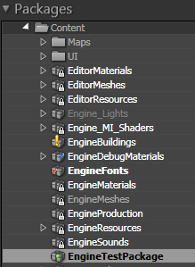
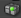
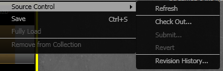
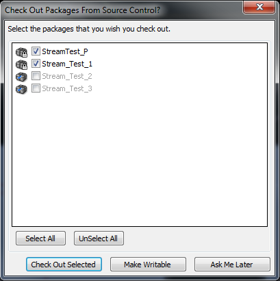

UDN
Search public documentation:
SCCIntegrationJP
English Translation
中国翻译
한국어
Interested in the Unreal Engine?
Visit the Unreal Technology site.
Looking for jobs and company info?
Check out the Epic games site.
Questions about support via UDN?
Contact the UDN Staff
中国翻译
한국어
Interested in the Unreal Engine?
Visit the Unreal Technology site.
Looking for jobs and company info?
Check out the Epic games site.
Questions about support via UDN?
Contact the UDN Staff
ソース コントロールの統合
ドキュメントの概要：Content ブラウザ でUnrealEd におけるソース コントロール システム（*SCC*）インテグレーション（統合）と Generic ブラウザとの相互作用についての概要を説明。本文の内容はソース コントロールの仕様経験がある程度あり、関連用語の意味が分かることを前提としています。 ドキュメントの変更ログ： Warren Marshall が原著。はじめに
すべての開発者にとって、開発中のゲームで作業する一方でパッケージやファイルを管理することは重要な問題ですし、プログラマーを念頭おいてデザインされたソース コントロール パッケージの使い方を、アーティストがマスターしなければならないとなれば、なおさらです―というのも、このパッケージには最小限のインターフェースと暗号的メッセージしかないのです。 本書では、UnrealEd において、アーティストがこれらのパッケージを UnrealEd 自体の中から管理できるようにすることで、こうした苦痛を幾分でも軽減する方法について述べます。注： SCC が適切なプログラミング インターフェースをエクスポートする限り、どの SCC を利用しても UnrealEd の関知するところではありません。 注意: UnrealEd は、SCC が適切なプログラミング インターフェースをエクスポートする限り、どの SCC が使われているのか分かりません (それに注意を払いません)。ログイン
最初に、ソース コントロールのサポートが有効になっていることを確認します。-
EditorUserSettings.ini をテキストエディタで開きます。 - [SourceControl] セクションを見つけます。
- Disabled=False に設定します。
- ファイルを保存します。
ソース コントロール パッケージ アイコン

SCC が有効になると、Content ブラウザのパッケージツリー表示のパッケージの隣にアイコンが表示されます。表示されるアイコンは以下の通りです。| アイコン | 内容 |
|---|---|
| チェックアウト済みの編集利用可能なファイル | |
 | リードオンリーのファイル ― 未チェックアウト |
 | 別ユーザーによりチェックアウト済みのファイル |
 | 現行バージョンに対応したファイルが存在しない |
|  | SCC デポに保管されていないファイル（_追加要_） |
未チェックアウトで、チェックアウトできる状態のファイルです。これは、ハードディスク ドライブに誰もまだチェックアウトしていない最新ファイルがあるという意味です。
既に他のユーザーによりチェックアウトされたファイルです。同一バイナリーファイルを複数のユーザーがチェックアウトすることはできないため、再びチェックインされるまでこのファイルをチェックアウトすることはできません。
チェックアウトされたことはないが、現行バージョンではないというファイルです。UnrealEd を終了し、SCC を起動し、現行バージョンにこのファイルを同期し、UnrealEd を再起動して初めて、このファイルをチェックアウトすることができます。
新規の SCC デポに保管されていないファイルです。メニューにあるオプション機能の[追加]によりこの新規ファイルをソース コントロールに呼び込むことができます。
Source Control (ソース コントロール) メニュー

Content ブラウザでパッケージ、またはアセットを右クリックすると、コンテキスト メニューが開かれます。ソース コントロール サブメニューは、ここからアクセスすることができます。- Refresh (更新) ブラウザ内のパッケージのステータスは、Content ブラウザが最後に更新された時点が、現在になっています。ステータスを即座にアップデートしたい場合は、このオプションを使用してください。
- Check Out (チェックアウト) まずファイルのステータスを更新し、チェックアウト可能かどうかを確認します。できる場合は、SCC デポからファイルをチェックアウトします。
- Submit... (提出) ファイルを SCC デポにチェックバックします。SCC プロバイダによって、これはチェックイン コメントを尋ねるダイアログをポップアップしたり、いくつかのオプションを表示したりします。このオプションは、ファイルがチェックアウトされている場合のみに利用可能です。
- Revert (戻す) ファイルをデポ内の現在の修正に戻します。前回提出された時点以降にユーザーによって保存されたこのファイルへの変更は破棄されます。このオプションは、ファイルがチェックアウトされている場合のみに利用可能です。
- Revision History... (修正履歴) SCC プロバイダがサポートする場合は、これは選択されたファイルの修正履歴を表示するダイアログをポップアップします。
その他のワークフロー機能
通常の操作の間、Content ブラウザを使用せずにソース コントロールとインターフェースで接続する方法がいくつかあります。変更プロンプトでのチェックアウト

パッケージがダーティ (保存される必要のあるパッケージ) とマークされていると常に、パッケージをソース コントロールからチェックアウトしたいかどうかを尋ねるダイアログが表示されるのに気付くでしょう。これで、作業しているパッケージを素早く、Content ブラウザで探すことなく、チェックアウトすることが可能になります。このダイアログは、パッケージが初めて変更された場合にのみ表示され、パッケージが保存され、ソース コントロールにチェックインされるまで再表示されません。エディタは、遅い操作中に変更されたパッケージもキューします。例えば、ライティングはいくつかのパッケージを変更する可能性があります。すべてを一度にチェックするように促されます。- Check Out Selected (選択したパッケージをチェックアウト): ソース コントロールから選択されたパッケージをチェックアウトします。備考: ゴースト化したパッケージは、他の誰かによってチェックアウトされた、またはヘッド修正でないので、チェックアウトすることができません。
- Make Writable (書き込み可能にする): 選択されたパッケージを書き込み可能にします。ゴースト化されたパッケージでさえも書き込み可能にすることができます。名前の隣のチェックボックスをクリックするだけです。ゴースト化パッケージには四角いアイコンが表示されます。これは、"Check Out Selected (選択したパッケージをチェックアウト)" をクリックすると、これらのパッケージが無視されることを意味しています。ソース コントロール プロバイダが、チェックアウトされていないファイルを読み取り専用にする場合、このオプションを使用することは、通常良いアイデアとは言えません。これは、ソース コントロール プロバイダが変更に関しての知識を持たなくなるからです。
- Ask Me Later (後で決定): 何もチェックアウトせずに、エディタ セッション中、リスト内のパッケージをチェックアウトするように尋ねられることがなくなります。いくつかの保存機能を使用することで、パッケージをチェックアウトするように促されることがあることに留意してください。
保存中のチェックアウト
エディタ内の保存オプションの多くも、ソース コントロールからパッケージをチェックアウトするように促します。ソース コントロール プロバイダの中には、チェックアウトされていないファイルを読み取り専用にするものもあります。エディタは、読み取り専用のファイルを保存できないので、保存するにはチェックアウトするか、書き込み可能にする必要があります。保存操作に関する詳細な情報は、Editor Package Save Procedure と UnrealEd ユーザー ガイド ページを参照してください。Perforce 固有
Perforce 接続ダイアログ
 ソース コントロールを有効化した状態でエディタを開始するが初めてな場合、このダイアログが表示されます。
ソース コントロールを有効化した状態でエディタを開始するが初めてな場合、このダイアログが表示されます。 - Server (サーバー): あなたの Perforce サーバー アドレスとポートです。
- User (ユーザー): あなたの Perforce ユーザー名です。
- Client Spec (クライアント スペック): ファイルのチェックアウトと提出時に使用するクライアント スペックです。Perforce のより新しいバージョンでは、ワークスペースとしても知られています。ユーザー名を入力した後、任意でユーザー名に関連付けられたクライアント スペックをブラウズすることができます。